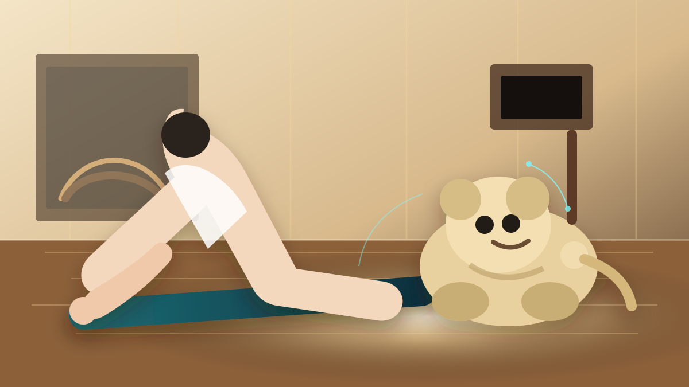

Analysis · Emotional AI Robotics · May 9, 2026
Roomba's Creator Unveils a New Kind of Robot
For more than two decades, Roomba defined consumer robotics. Now its creator is pointing toward something more intimate: a soft emotional AI companion designed to live with people, not just complete household tasks.

For more than 20 years, Roomba helped define what consumer robotics meant. It was one of the first autonomous machines that millions of people allowed into their homes. It moved quietly through living rooms, avoided furniture, mapped spaces, and normalized the idea that robots could coexist with people in everyday domestic environments.
Now, Roomba creator Colin Angle may be preparing for something far more ambitious. His new venture, Familiar Machines & Magic, has introduced Familiar: a soft-bodied emotional AI companion robot designed not to clean the home, but to emotionally interact with the people living inside it.
From the RoboLogAI perspective, this could be one of the more important shifts happening in robotics right now. Not because the robot is physically spectacular. Because it changes the purpose of home robotics.
From Helper Machines to Emotional Presence
For decades, robotics was mostly framed around utility. Robots were built to automate labor, improve efficiency, reduce repetitive work, and optimize industrial systems.
Even consumer robots followed the same logic. Vacuum robots cleaned floors. Lawn robots cut grass. Warehouse robots moved packages.
But artificial intelligence is changing the foundation of robotics. The industry is starting to move away from "machines that perform tasks" toward "machines that form relationships."
That is where Familiar becomes interesting. Unlike many robotic pets, it does not appear to be designed as a realistic dog or cat replacement. Instead, it points toward a new kind of AI companion: soft, expressive, emotionally responsive, and behaviorally adaptive.
The goal is not realism. The goal is emotional attachment.
A Robot Does Not Need to Talk to Feel Alive
One of the most fascinating design choices behind Familiar is that it does not seem to rely heavily on speech. Instead, it communicates through movement, attention, body language, behavioral response, subtle sounds, and emotional cues.
In other words, the robot is designed to feel emotionally present, not merely conversationally intelligent.
That may be the smarter path. Humans often form emotional bonds through behavior faster than language. We see this with pets, babies, animated characters, and even simple emotional interfaces.
The robotics industry may be discovering that emotional intelligence is not only about words. It is about presence.
Why This May Matter More Than Another Humanoid Demo
The robotics world is currently obsessed with humanoids. Every week we see walking robots, dancing robots, warehouse automation demos, and factory task execution.
Companies like Tesla, Figure AI, Unitree Robotics, Boston Dynamics, and Apptronik are racing to build the future labor force.
But emotional robots may enter homes faster than humanoid workers. Why? Because emotionally supportive robots address a more immediate human problem: loneliness.
Across the world, populations are aging, social isolation is increasing, digital life is replacing physical interaction, and AI companionship is becoming normalized. That creates a large opportunity for physical AI systems with emotional intelligence.
Unlike humanoid robots, these systems do not need to perfectly imitate human movement. They need to respond emotionally, consistently, and safely. That lowers the adoption barrier.
Roomba Quietly Built the Foundation
What makes this story especially important is who is building it. Roomba was not just a successful product. It was one of the largest real-world robotics deployments in history.
For years, Roomba systems operated inside millions of homes, gathering practical experience around room mapping, obstacle avoidance, navigation patterns, human movement, and pet-aware domestic behavior.
That means the people behind Roomba understand something many futuristic robotics startups still struggle with: how robots behave in real human environments.
In the AI era, real-world behavioral experience becomes a major advantage. Many robotics startups can produce impressive demos. Far fewer have decades of home robotics experience.
The Beginning of AI That Lives With Us
At RoboLogAI, we believe Familiar represents something larger than a robotic pet. It points toward ambient emotional robotics.
Future AI systems may not be tools we activate only when needed. They may become persistent intelligent presences that live with people, adapt over time, learn routines, provide companionship, monitor safety, assist older adults, and become emotionally personalized.
This is where robotics and psychology begin to merge. It could become one of the most important technology shifts of the next decade.
RoboLogAI View
Familiar reminds us that the future of robotics is not only stronger motors, better joints, or more impressive walking demos. The next phase of robotics may also be about the emotional relationship between humans and machines.
Humanoid robots may change work. Emotional robots may change what it means to live with AI.